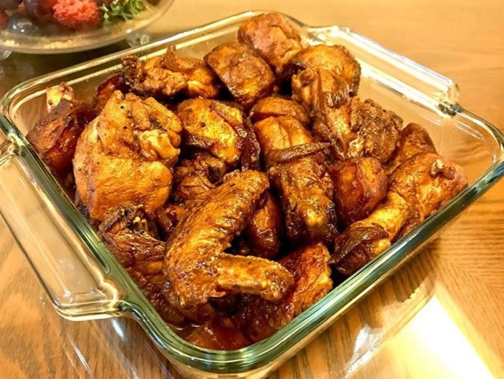

Chicken Adobo

Description
Chicken Adobo is a type of Filipino chicken stew. Chicken pieces are
marinated in soy sauce and spices, pan-fried, and stewed until tender.
Ingredients
-
500 gms chicken, cut into serving pieces (retain the skin of the
chicken)
- 5 cloves garlic, minced
- 1/2 cup soy sauce
- 1/3 cup vinegar
- 1/2 cup water
- salt and pepper
Steps
-
In a pot, combine all the ingredients and cook over low to medium heat.
- Cook until the liquid mixture dries up.
- Serve.